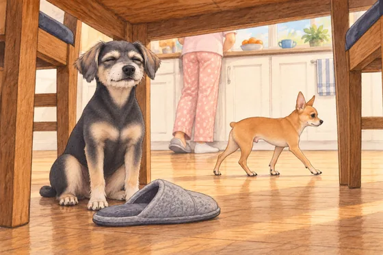
Meet Neet and Buddy
Barksdale was a sleepy town until five in the morning, when Neet woke up. A four-pound chihuahua with Dorito-shaped ears, he considered this a…
The everyday adventures of two extraordinary dogs and the humans who love them.

70 stories
No stories match yet. Try another word or choose All stories.

Barksdale was a sleepy town until five in the morning, when Neet woke up. A four-pound chihuahua with Dorito-shaped ears, he considered this a…
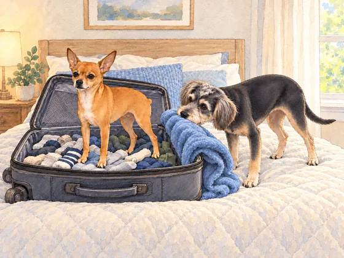
Heather opened a suitcase on the bed. Buddy fetched his favorite blanket. Neet, the orange whirlwind of a chihuahua with Dorito-shaped ears, began…
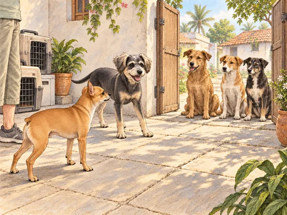
Neet and Buddy’s adventure in India began the moment they stepped out of the airport. A horn sounded before Neet had decided whom to bark at. By the…
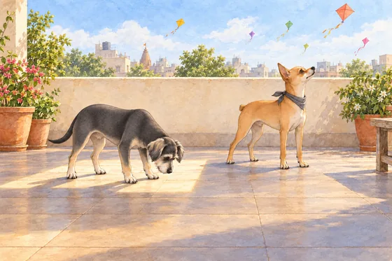
January in Gujarat had filled the sky with kites. By the time Heather, Neet and Buddy reached Ahmedabad for Uttarayan, Neet had tried to follow three…
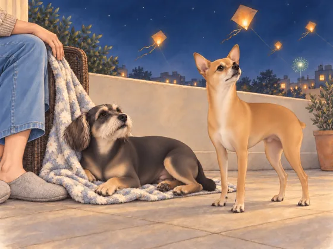
On the second evening of Uttarayan, Buddy brought his blanket closer to Heather’s chair. He had found a way to watch the sky without having to watch…
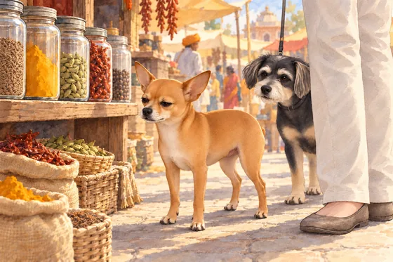
The day after Uttarayan, Heather decided it was time for Neet and Buddy to experience the bustling bazaars of Gujarat. The narrow lanes of the market…
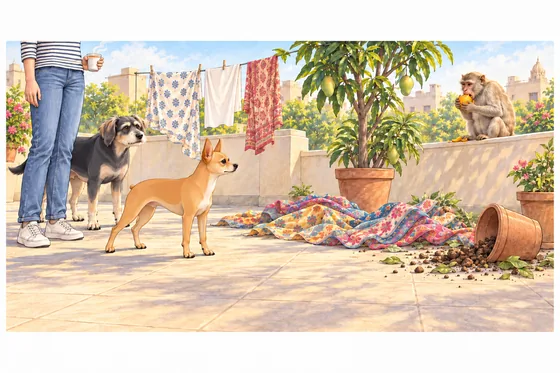
Heather, Neet, and Buddy had been enjoying their stay at her friend Priya’s bungalow in the outskirts of Ahmedabad. The house was surrounded by lush…
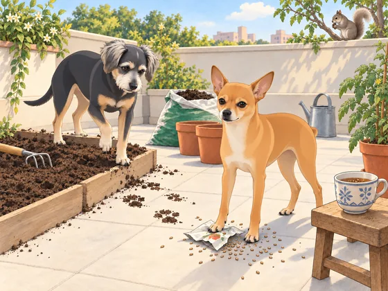
The aftermath of the monkey invasion left Heather’s rooftop garden in ruins, with upturned pots, shredded leaves, and soil scattered across the…
The streets of Heather’s neighborhood in Ahmedabad were alive with the chatter of street vendors and the hum of auto-rickshaws. For Neet, however, it…
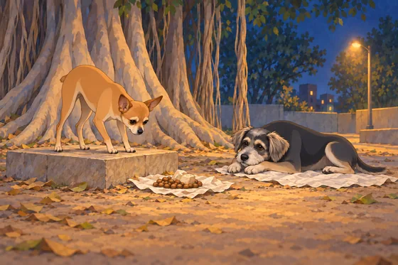
Neet had finished his evening inspection of the food stash and was inspecting it again from his command post, a flat stone under the banyan tree.…
Buddy had just found a comfortable hollow beneath the banyan tree. He turned twice, moved a stone with his paw and lowered himself into the exact…
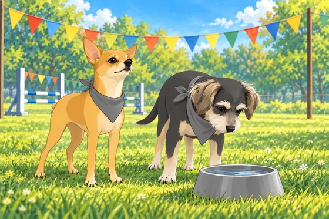
Neet had learned two things about the annual Neighborhood Dog Games: there would be ribbons, and none of them had his name on them yet.
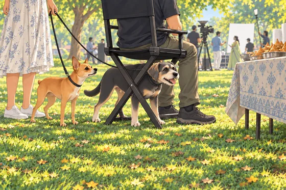
The neighborhood was buzzing with excitement— a film crew had arrived to shoot a scene for a big Bollywood movie. The park was transformed into a set…
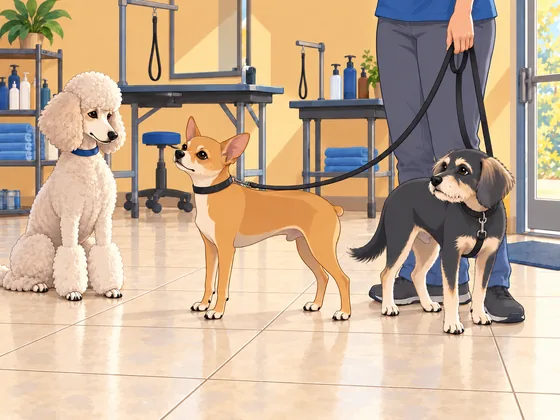
Heather had finally decided it was time— Neet and Buddy were due for a haircut. With summer creeping in, their fur had grown longer than ever, and…
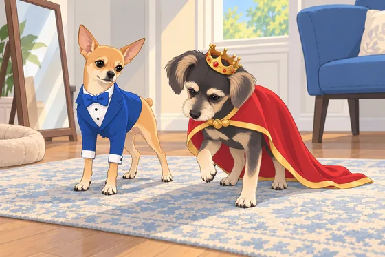
The neighborhood had never seen such excitement— the annual Dazzling Dog Fashion Show was about to begin! Flyers had been posted everywhere,…
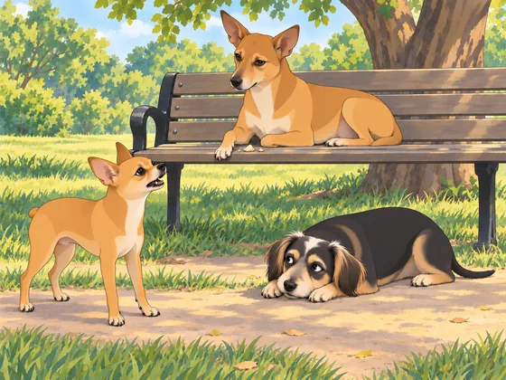
The excitement of winning the Dazzling Dog Fashion Show had barely faded when Heather had another idea.
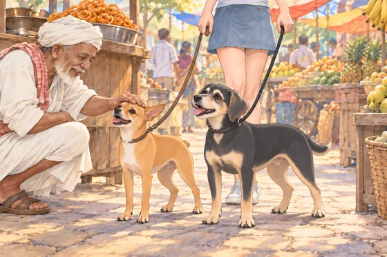
After Neet and Buddy’s “successful” Gujarati lesson, Chirag decided it was time to take things up a notch. “Alright, class,” he announced one…
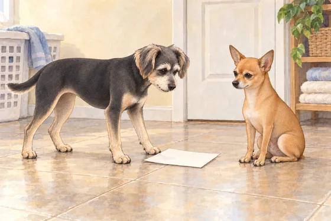
After the wild bazaar adventure, Chirag had another brilliant idea.
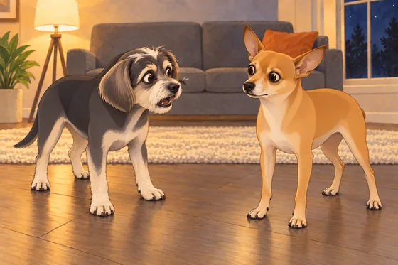
It all started with a single, high-pitched buzz.
It all started with a single bark.
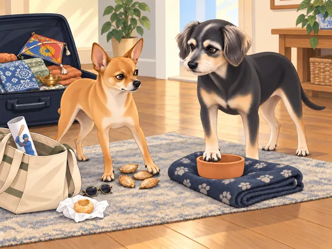
The time had come. After months of adventures, friendships, and countless meals stolen from unsuspecting street vendors, Neet, Buddy, and Heather…
After barely surviving security, Heather, Neet, and Buddy made their way to the airport lounge, looking for a moment of peace.
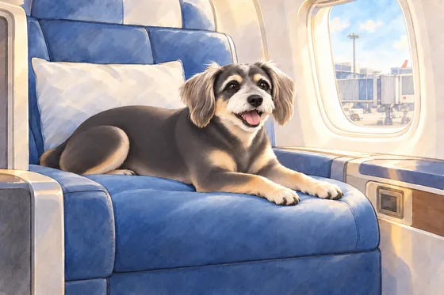
After the unforgettable airport lounge experience, Heather, Neet, and Buddy finally approached the boarding gate. They were fully expecting a long,…
The business class experience had barely worn off when the trio touched down in Istanbul for their layover. The airport was enormous, bustling with…
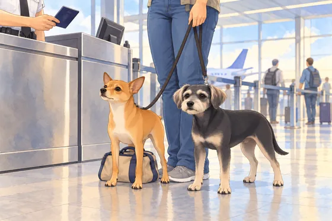
After the Istanbul layover chaos (and Neet’s infamous olive heist), the trio finally landed in the U.S., exhausted but victorious. However, the final…
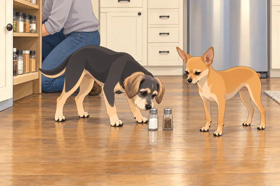
After their whirlwind adventures abroad, Heather, Neet, and Buddy finally settled back into their cozy suburban home. The familiar sights and sounds…
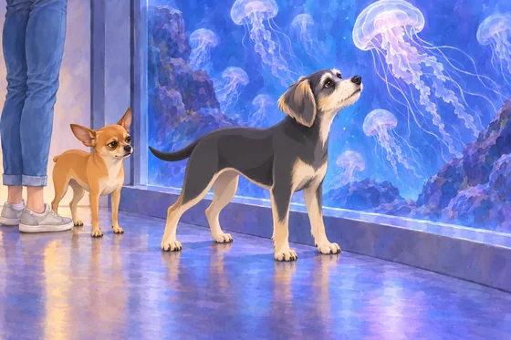
Heather’s birthday was fast approaching, and while she hadn’t made any grand plans, Neet and Buddy had their own ideas.
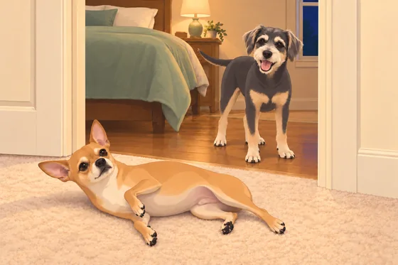
After the chaotic yet unforgettable aquarium adventure, Heather’s birthday celebrations weren’t over yet. That evening, she had invited a few close…
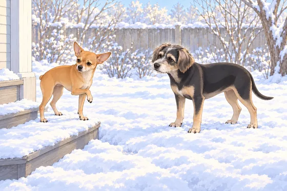
Winter had arrived, and with it came icy winds, frigid mornings, and Neet’s absolute refusal to cooperate.
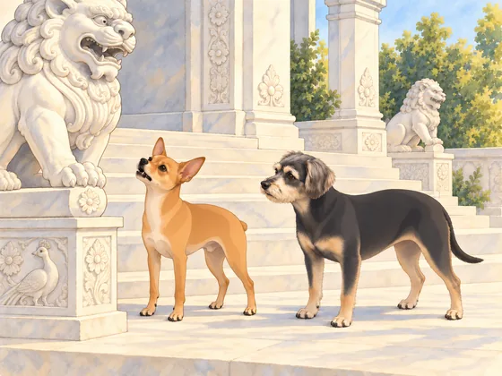
It was a crisp Sunday morning when Heather decided to take Neet and Buddy on a spiritual and culinary adventure. They were going to the white-marble…
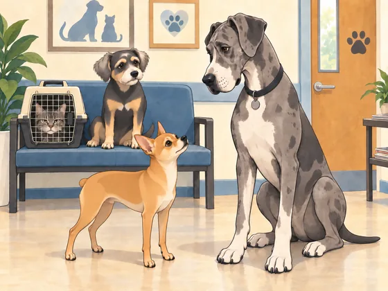
It all started with a single toothache.
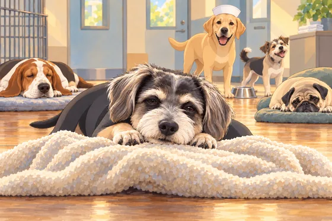
Buddy slowly blinked awake. The world felt soft, warm, and incredibly weird.
The weekend had arrived, and as was tradition, Heather took Neet and Buddy for their weekly park stroll. But this was no ordinary outing— this was…
It was another classic weekend morning. Neet, the cunning commander with ears like satellite dishes, paced in front of the door. Buddy, his best…
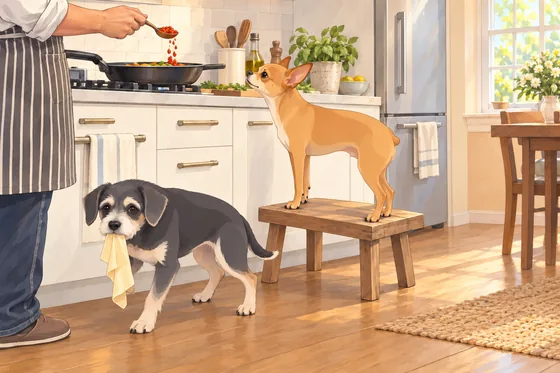
It was a perfectly peaceful Saturday. The kind of Saturday where the world felt like it was made of soft hoodies, sunlit balconies, and promises of…
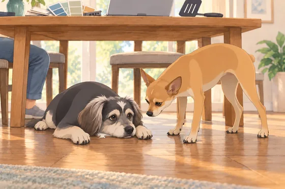
Sagar stood by the living room window, trying to picture their next house. Neet occupied the only patch of sun, which already ruled out anything with…
It was one of those nights when everything was, for a fleeting moment, perfectly still. The new house— now broken in, every nook infused with…
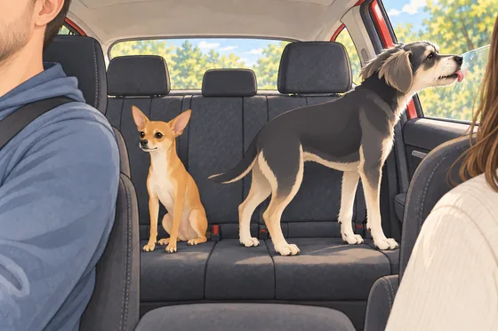
The royal chariot— otherwise known as a red Subaru Outback— purred down I-75, windows rolled down, mountain air whipping Buddy’s ears into a frenzy…
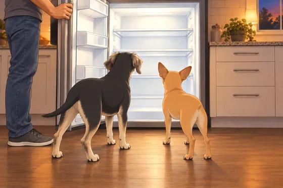
After three grueling days of driving, snack stops, gas station bathroom dramas, and heated debates over playlists, the royal Subaru finally rolled…
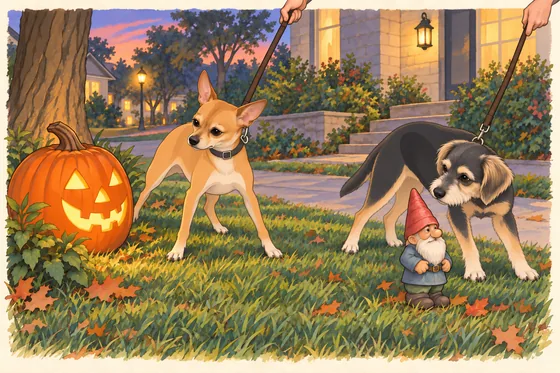
Sagar stood at the front door holding two leashes. Outside, their first Austin neighborhood walk waited in the evening light. Buddy was making it…
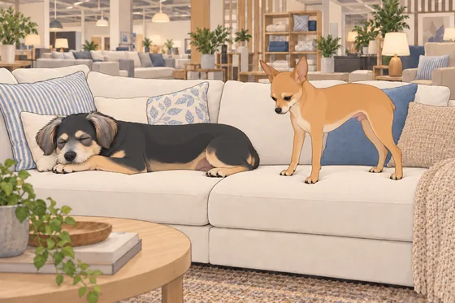
Sagar and Heather stood in the empty living room on Saturday morning. Even Heather’s sigh echoed.
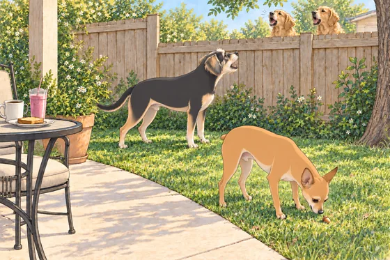
There was a time, not so long ago, when Neet was the canine equivalent of a hair-trigger fire alarm. If something moved, creaked, rustled, or simply…
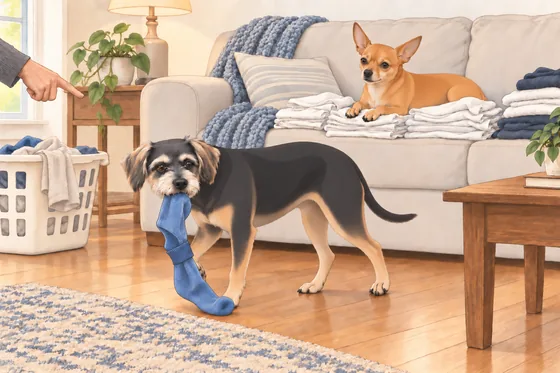
It was a golden Saturday morning in Austin. Heather stood in the living room with a laundry basket balanced on her hip. Neet looked up. Buddy quietly…
The morning after the Great Laundry Day Uprising, the guest blanket still had two dog-shaped hollows in it.
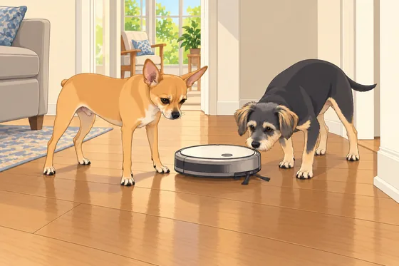
It started with that box.
It began with a rumble.
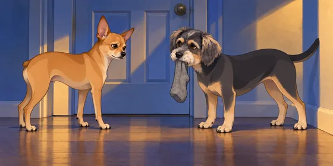
The night before the King’s birthday was no ordinary night in the Patel household.
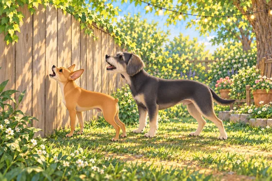
For weeks, Neet had been basking in his Zen Master glow.
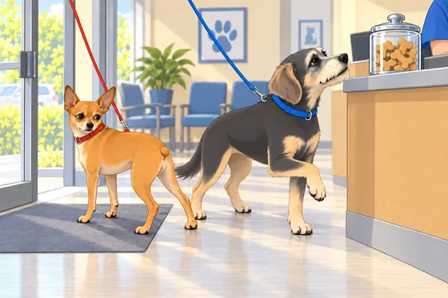
Saturday mornings in the Patel kingdom usually meant pancakes, backyard patrols, and possibly a nap as long as the Mississippi River. But this…
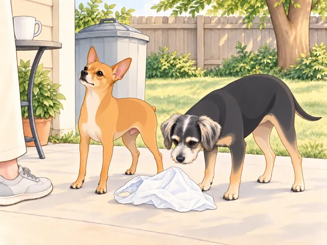
Night had fallen heavy across the kingdom, but for Neet, sleep was a stranger.
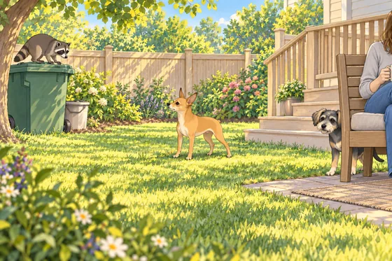
The demotion hung over the household like a thundercloud.
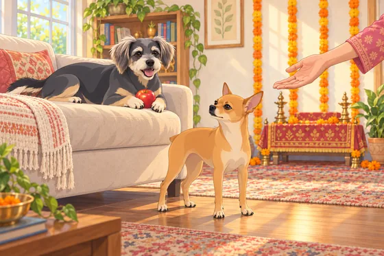
Saturday mornings in the Patel household were usually slow affairs: chai on the patio, Neet patrolling for squirrels, Buddy chasing invisible…
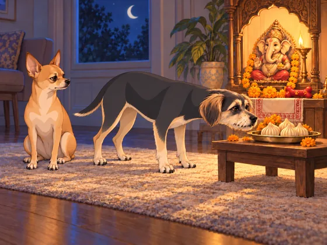
The house was silent.
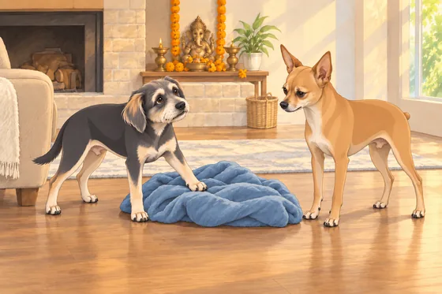
The days of Ganesh Chaturthi passed in a rhythm the dogs had begun to know. Morning aartis, evening lamps, Buddy’s squeaky-bone offerings, Neet’s…
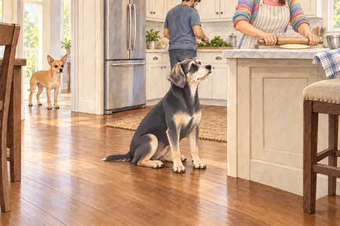
The shrine looked… different.
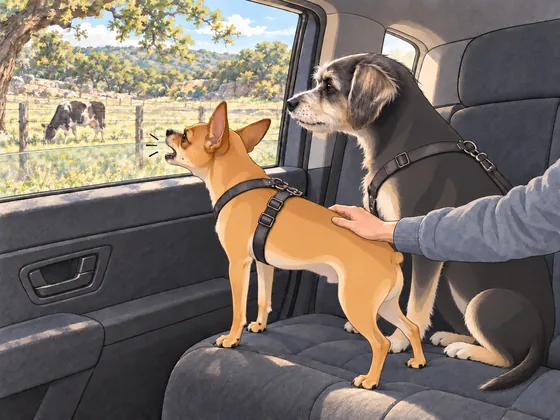
At 6:30 a.m., the Patel kingdom was humming like a beehive that had read a travel blog.
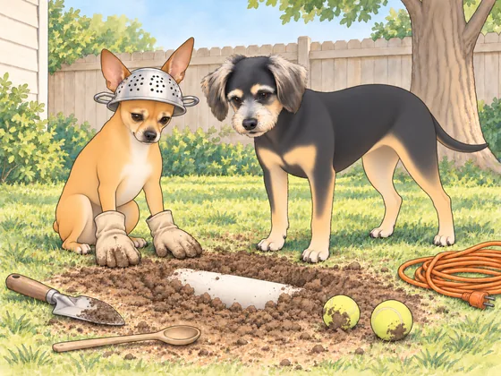
At 6:02 a.m., the backyard was quiet except for one (1) determined dog and one (1) deeply skeptical snack enthusiast.
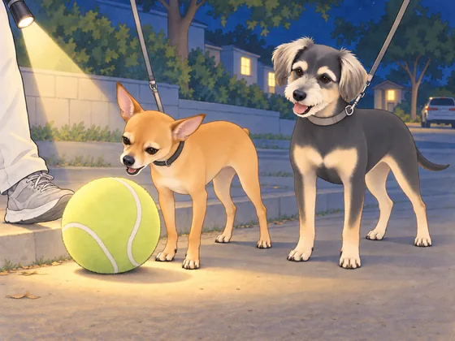
It was one of those Austin nights when the air is warm but cooperative, the sidewalks still holding a little heat, and the crickets playing backup…
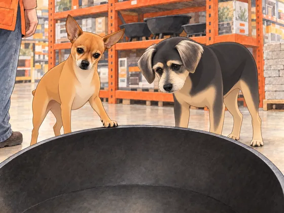
It started with Heather standing at the back door in her socks, coffee in hand, measuring the late afternoon with her eyes.
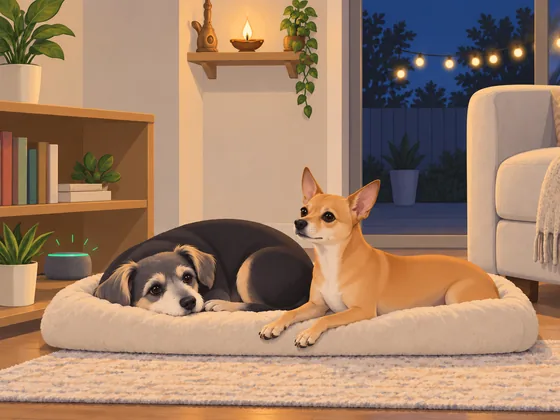
The night was soft— string lights idling like patient fireflies, the new fire pit asleep under its spark screen. Sagar rinsed the last mug; Heather…
Saturday mornings were never quiet in the Kingdom of Calm. Sagar and Heather were off running errands— groceries, dog toys, maybe even a surprise…
Buddy was snoring. I was sprawled on the rug, contemplating the deeper mysteries of life— like where socks go when they vanish and why the mailman…
The morning began with a flurry of suspicious packing activity. Sagar pulled on his hoodie. Heather packed snacks, water, and The Royal Canine Travel…
The evening sun dipped lower in the horizon, casting a golden-orange glow over the city skyline. From the 17th-floor balcony of their apartment, the…
Neet had arranged himself for a quiet afternoon and expected the afternoon to cooperate. He was sprawled luxuriously on the velvet ottoman, one paw…
It was one of those golden afternoons where time seemed to slow down, and the air smelled faintly of toasted flour and quiet ambition. Heather was…
It began, as all great dramas do, with a seemingly innocent morning. The sun was shining, the birds were chirping, and Neet and Buddy were basking in…
The sun rose over Piedmont Park with a theatrical flourish— as if it, too, had RSVP’d to the most anticipated wedding of the season: the union of…
The morning of Diwali preparations dawned bright and full of promise. Neet conducted his usual pre-departure security sweep of the car with the…
The morning sun painted Austin in shades of gold as Sagar loaded the last bag into the car. Neet conducted his pre-departure inspection with the…